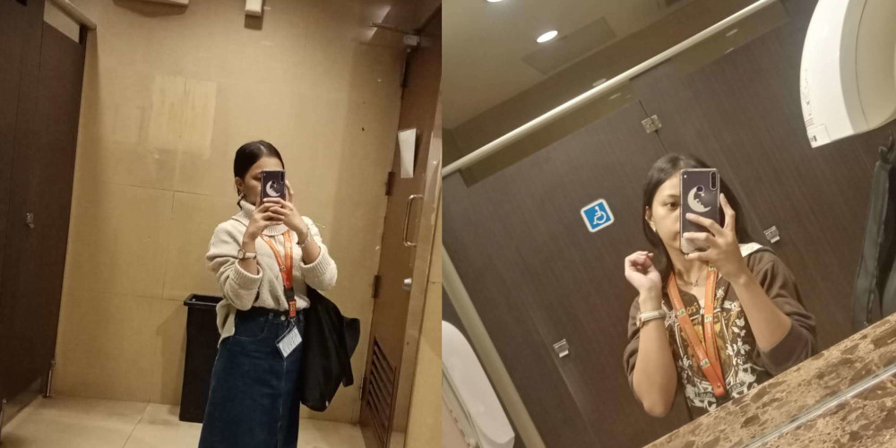
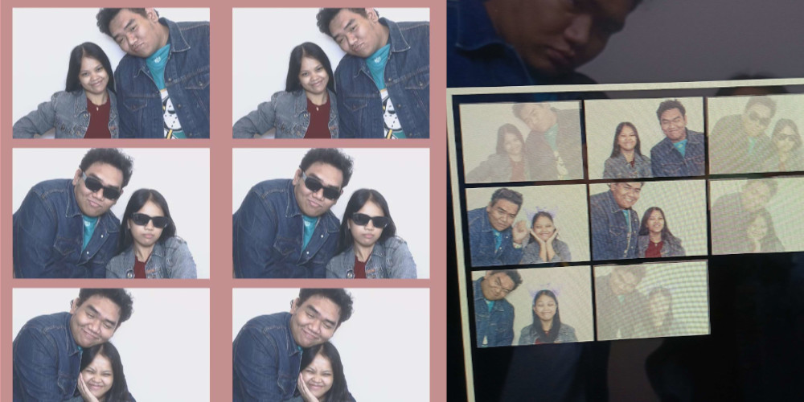
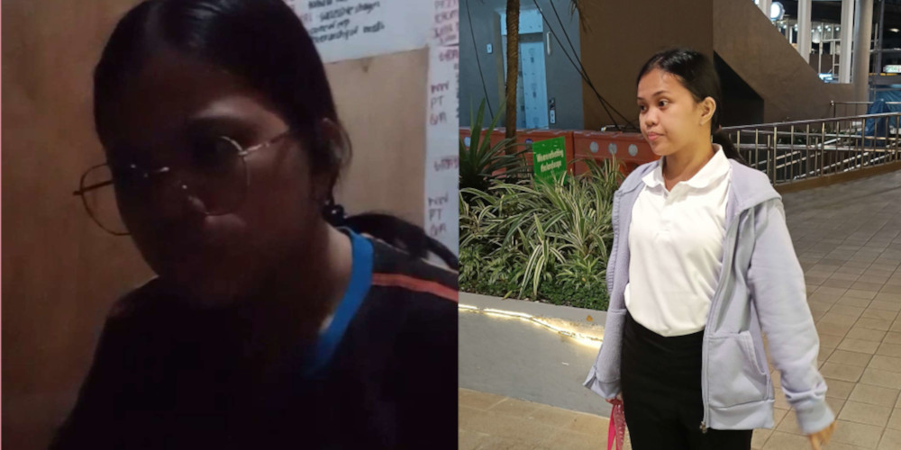

Haluu Beebiii! Happyy happpyyy happyyy bitrthdaay! The pictures for this for letter includes the first pic you sent to me and the first time we interacted on facebook 😊 It was the beginning of our story together, it was the moment where our paths met 😊 The day where I can say I made the right choice, my bet decision to ever make 😊 How time flies, we are already celebrating your birthday together twice 😊 I look forward to more birthdays, christmas, new year, and all the special occassions 😊 We will be together for all of those mwaaa 😊 This is also the time you told me I'm the first person you will boast to when you finally get your teaching license mwaaaa 😊
Joshua 1:9 (ESV): "Be strong and courageous. Do not be frightened, and do not be dismayed, for the Lord your God is with you wherever you go."
Haluuu second letter mwaaa 😊 For this letter the two pics was from your work 😊 I remember the time where you were tired, exhausted, and having a lot of migraine from that work which led you to a corner where you needed to take a breather from the world 😊 But I saw how you struggled and saw your strength, you never let anyone let you down, you know deep within you that you can do it 😊 You push through your own limits and made sure before you left that place that your name still stands and let them know that you as well can do it 😊 You had a lot of breakdowns and self doubt where you thought that maybe you were meant to that work and only forcing the path to teaching but you held on to your dream 😊 You leaped the high road, you took a risk and a decision to take another chance at this teaching path which made me admire you more mwaaaa 😊
Proverbs 24:16 (ESV): "For the righteous falls seven times and rises again, but the wicked stumble in times of calamity."
My 3rd letter mwaaaa 😊 This letter I posted the first time we celebrated your birthday together 😊 You were the princess of this day, anything you ask for we did and everything you wanted we got it 😊 I wanted to show you the your birthday is is special, this is your day, the day where you were introduced the world 😊 I wanted to make this day memorable and make you say the words "I had fun during my birthday" 😊 Today is everything about you, you are the star of this day, you are the main character 😊 What you wish my beloved queen, is my command 😊 If everyone else disagree I'll debate everyone of them, if they don't see you I'll make sure you feel that I see you, if you think your alone my arms will always wrap around you, if you feel cold let the warmth of my body be your fireplace, if you feel you are sinking I'll make sure my hand is always within your reach, if you feel no one is proud of you I will provide the loudest clap for you 😊 You are the most precious thing in this world, you are special, and this is your day so enjoy it mwaaa
Jeremiah 29:11 (NIV): "For I know the plans I have for you,” declares the Lord, “plans to prosper you and not to harm you, plans to give you hope and a future."
4th letter hihi 😊 The two pictures are from your review days and the day of your exam 😊 These are the days where you faced your challenges head on, you had a short period of review time, and you felt you weren't ready 😊 You had your lows and high, but one thing you never lost was your faith and hope 😊 No matter how hard life was hitting you, you held on to what you believe in and it's got you in a point where you did not stop even when you were doubting yourself 😊 You never gave up, you tried then tried again because it is what you want 😊 You had times where you said you don't you would make it and times where you said you might stop pursuing this due to the disappointment after but in your heart you still fought for the love of your dream 😊 You are one of the strongest people I know, you never had a weak heart and you're mentality is not frail 😊 Most people forget and stay accustomed to what if but you never stayed on that path you kept your head high and made your march through that path of your dreams 😊 You are not weak my wifeeeyy, you are strong, and you are the best mwaaa 😊
Philippians 4:13 (NIV): "I can do all this through him who gives me strength"
This is my 5th letter, not the last cause I will be making a lot of letters in the future to greet you 😊 Yeheeeeyyy!! Congraaaatulaatioons!! This is the day you finally get your pin and now officially a licensed teacher 😊 What a beautiful journey it is achieving one of your goals 😊 I'm keeping this site open, it is like our diary of journeys to our goals 😊 All the doubt, the frustration, the stress, the rejection, the fails, and the pressure 😊 You turned those things into motivation to show them "I'll make it" "All of the poeple who didn't believe me look at me now" you showed them that you can and proved them wrong 😊 You're the best daughter your parents could ask for, you're the best sibling anyone could have, you are the best teacher that any student could wish for, you are the best partner anyone would pay the wishing well for, and you are the best person anyone would know 😊 If they can't see it beebii I do and I'm telling you all your efforts are seen and I'm proud of you 😊 This is your first birthday as a licensed teacher, we are going to do anything you want 😊 You should pick what you want and have fun, list down the things you want to do and have fun 😊 Happpyyy Biiirthdaaay!! You're the greatest decision I've ever made, you're my rock when I'm tired, you're my happiness when I'm sad and you are my everything 😊 Enjooy youur daay beebii! ilooooveyouuuuusoooomuuchiiiieee and imiissschuuuuu alwaaays mwaaa 😊
Psalms 20:4 (NIV): "May he give you the desire of your heart and make all your plans succeed."